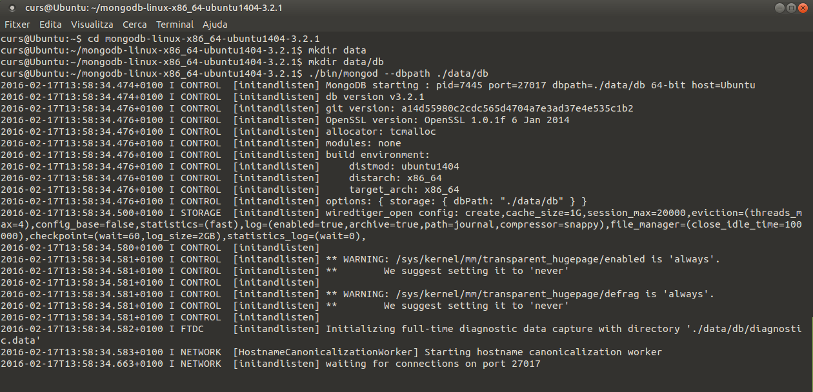
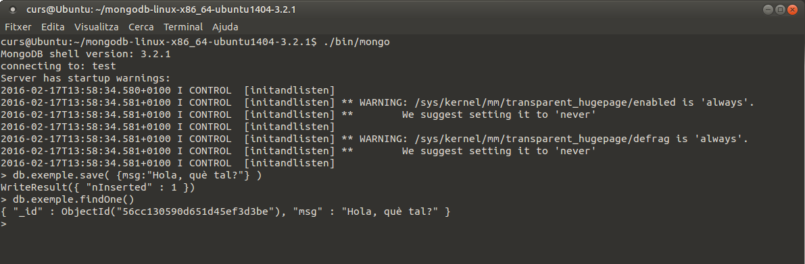
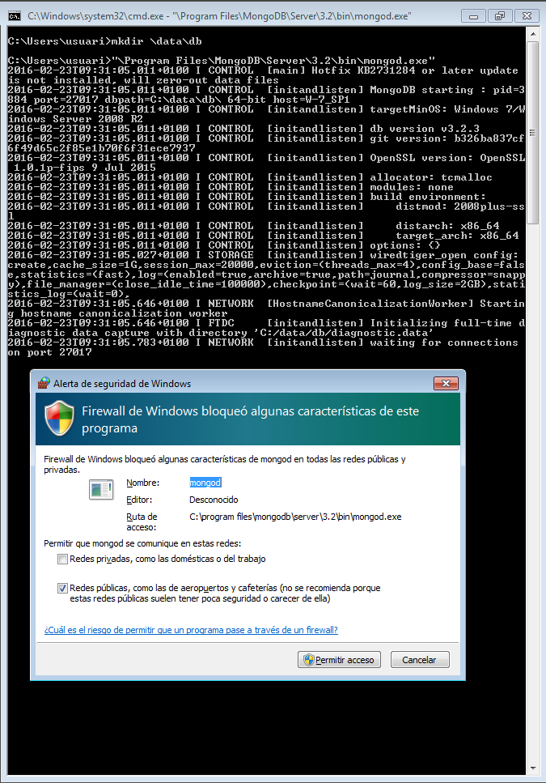
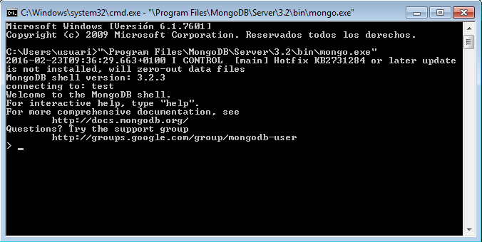
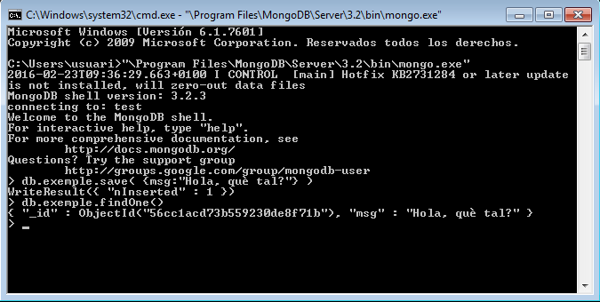

3.1 - Instal·lació de MongoDB
Podrem instal·lar MongoDB en qualsevol plataforma. I fins i tot sense tenir permisos d'administrador, com veurem en el cas d'Ubuntu.
També està la possibilitat de crear un servidor en el núvol, fins i tot gratuït. És l'opció que ens suggereix Mongo per defecte, però nosaltres no la utilitzarem.
Instal·lació en Linux
Per a poder fer la instal·lació més bàsica, podrem fer-lo sense permisos d'administrador. Si els tenim tot és més còmode, però si no en tenim també ho podem fer, com veurem i remarcarem a continuació.
De la pàgina de MongoDB (https://www.mongodb.com/download-center#community) ens baixem la versió apropiada per al nostre Sistema Operatiu. Observeu com en el cas de Linux hi ha moltes versions. En el cas d'Ubuntu 20.04 de 64 bits, aquest fitxer és: https://fastdl.mongodb.org/linux/mongodb-linux-x86_64-ubuntu2004-5.0.5.tgz. Però recordeu que us heu d'assegurar de la versió
Senzillament descomprimirem aquest fitxer on vulguem, i ja estarà feta la instal·lació bàsica.
Per defecte el directori de la Base de Dades és /data/db
L'únic problema que podríem tenir si no som administradors és que no tinguem permís per crear aquest directori. Aleshores crearem un altre directori i en el moment d'arrancar el servidor, li especificarem aquest lloc.
La manera d'arrancar el servidor serà:
<directori arrel MongoDB>/bin/mongod
Opcionalment li podem dir on està la Base de Dades (si no ho especifiquem assumirà que està en /data/db):
<directori arrel MongoDB>/bin/mongod --dbpath <directori de la BD>
Resumint, i estant situats al directori on hem descomprimit MongoDB:
- Si som administradors:
-
Creem el directori de dades:
mkdir /data
mkdir /data/db -
Arranquem el servidor:
./bin/mongod
-
- Si no som administradors:
-
Creem el directori de dades:
mkdir data
mkdir data/db -
Arranquem el servidor:
./bin/mongod --dbpath ./data/db
-
La següent imatge il·lustra aquesta segona opció. Està per a una versió anterior de MongoDB, però és totalment equivalent:

Una vegada en marxa el servidor, no hem de tancar aquesta terminal, ja que pararíem el servidor. Per a connectar un client, obrim una segona terminal i executem el client mongo:
./bin/mongo

Per a provar el seu funcionament, anem a fer un parell de comandos: un per a guardar un document i un altre per a recuperar-lo.
Per a qualsevol operació s'ha de posar db seguit del nom de la col·lecció, i després l'operació que volem fer. Amb el següent:
> db.exemple.save( {msg:"Hola, què tal?"} )
Ens contestarà:
WriteResult({ "nInserted" : 1 })
Indicant que ha inserit un document en la col·lecció exemple (si no estava creada, la crearà).
I amb el següent comando recuperem la informació:
> db.exemple.findOne()
Que ens tornarà:
{ "_id" : ObjectId("56cc130590d651d45ef3d3be"), "msg" : "Hola, què tal?" }
Tot ho fa en la mateixa terminal, i a cadascú de nosaltres ens donarà un número diferent en ObjectId. En la següent imatge es veuen les dues operacions:

En realitat estem connectats a una Base de Dades anomenada test. Podem crear i utilitzar més d'una Base de Dades, però en aquest curs tindrém més que suficient amb aquesta Base de Dades. Per a comprovar-ho podem executar la següent sentència, que ens torna el nom de la Base de Dades:
> db.getName()
test
Instal·lació en Windows
No ofereix cap dificultat. Ens baixem la versió apropiada de MongoDB per a Windows, depenent de si és de 32 o 64 bits la nostra versió, que resultarà ser un .msi directament executable. En el moment de fer aquestos apunts, el de la versió de 64 bits era el fitxer:
mongodb-win32-x86_64-2008plus-ssl-3.6.2-signed.msi
Una vegada baixat, executem el fitxer. Haurem d'acceptar la llicència, instal·lar la versió completa, i acceptar quan Windows ens avise que un programa vol instal·lar software. El de sempre.
Com en el cas de Linux, abans d'executar el servidor haurem de tenir el directori creat. Per defecte el directori serà \data\db
Aqueste serien les ordres per a crear el directori i després arrancar el servidor. Està per a una versió anterior, però seria totalment equivalent:
mkdir \data\db
C:\Program Files\MongoDB\Server\3.2\bin\mongod.exe
En aquest a imatge s'observa que en intentar posar en marxa el servidor, el Firewall de Windows ho detecta, i sol·licita permís per posar-lo en marxa. Acceptem i prou:

Per a connectar-nos com a clients, ho haurem de fer des d'una altra terminal, ja que si tanquem aquesta pararem el servidor. El programa és mongo.exe:
C:\Program Files\MongoDB\Server\3.2\bin\mongo.exe

Per a provar el seu funcionament, anem a fer un parell de comandos: un per a guardar un document i un altre per a reculerar-lo.
Per a qualsevol operació s'ha de posar db seguit del nom de la col·lecció, i després l'operació que volem fer. Amb el sgüent:
> db.exemple.save( {msg:"Hola, què tal?"} )
Ens contestarà:
WriteResult({ "nInserted" : 1 })
Indicant que ha inserit un document en la col·lecció exemple (si no estava creada, la crearà).
I amb el següent comando recuperem la informació:
> db.exemple.findOne()
Que ens tornarà:
{ "_id" : ObjectId("56cc1acd73b559230de8f71b"), "msg" : "Hola, què tal?" }
Tot ho fa en la mateixa terminal, i a cadascú de nosaltres ens donarà un número diferent en ObjectId. En la següent imatge es veuen les dues operacions:

En realitat estem connectats a una Base de Dades anomenada test. Podem crear i utilitzar més d'una Base de Dades, però en aquest curs tindrés més que suficient amb aquesta Base de Dades. Per a comprovar-ho podem executar la següent sentència, que ens torna el nom de la Base de Dades:
> db.getName()
test
Llicenciat sota la Llicència Creative Commons Reconeixement NoComercial SenseObraDerivada 4.0